UTS — Deep Learning
Rangkuman belajar, disalin apa adanya dari catatan Notion.
Kisi-kisi
100 menit, boleh kalkulator, dikerjakan di kertas, dan ada soal yang bercabang.
Essay
- Linear model (bonus, 5%): keterbatasan linear model dan alasan deep learning bisa mengatasinya.
- Model training dan evaluation (15%): materi sesi 2, soal bisa bercabang.
- CNN (15%): komponen, fungsi tiap layer, dan hitungan arsitektur, bukan hitungan kernel.
- GAN (15%): prinsip generative model dan training yang paling optimal.
Study case
- MLP (25%): klasifikasi dan regresi, limitasi, dan solusinya, soal bercabang.
- Autoencoder (25%): bentuk arsitektur dan tipe yang paling cocok per kasus, beserta justifikasinya.
Tanya tentang materi ini
Ketik pertanyaan, jawabannya diambil langsung dari isi halaman ini. Tidak ada koneksi internet yang dipakai.
Contoh: Bagaimana cara menghitung ukuran output convolution? Kapan pakai autoencoder denoising? Apa itu dying ReLU?
1. Linear Model
Linear model adalah model machine learning yang menebak jawaban dengan satu rumus: setiap fitur dikali weight, lalu semuanya dijumlahkan.
Tanpa feature engineering yang tepat (pake fitur mentah langsung), batas antar kelasnya hanya bisa berupa garis lurus, sehingga model gagal pada data dengan pola non-linear seperti XOR.
Pola non-linear
Pola non-linear adalah hubungan input dan output yang pengaruh inputnya tidak selalu sama, bisa berubah tergantung nilainya atau tergantung input lain, sehingga tidak bisa digambarkan dengan satu garis lurus.
Kelemahan utama linear model adalah ketergantungannya pada feature engineering. Agar bisa menangani pola non-linear, manusia harus menebak dan menambahkan fitur yang tepat sendiri, misalnya x² atau log(x). Kalau fiturnya tidak tepat, model tetap gagal.
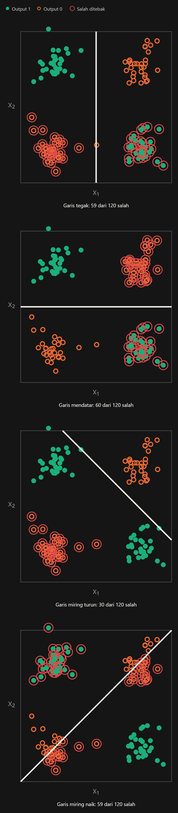
Untuk mengatasi masalah tersebut, Deep Learning bisa menjadi solusinya.
Deep learning adalah bagian dari machine learning yang memakai neural network dengan banyak layer untuk mempelajari fitur langsung dari data mentah.
Deep learning mengatasi ketergantungan pada feature engineering karena fiturnya dipelajari sendiri, bukan dibuat manusia.
Ada dua komponen yang memungkinkan hal ini:
- Hidden layer: setiap layer mengubah data menjadi fitur baru, dari fitur sederhana di layer awal sampai fitur kompleks di layer akhir. Pada foto, layer awal mengenali tepi, lalu layer berikutnya mengenali bentuk.
- Activation function: tanpa ini, tumpukan layer tetap setara dengan satu linear model. Dengan activation function, model bisa mempelajari pola non-linear.
Weight di setiap layer diatur otomatis saat training, jadi fitur yang terbentuk adalah fitur yang paling membantu mengurangi kesalahan.
Contohnya XOR: linear model butuh manusia menambahkan fitur x₁·x₂, sedangkan MLP menemukan sendiri dua garis pemisah di hidden layer-nya.
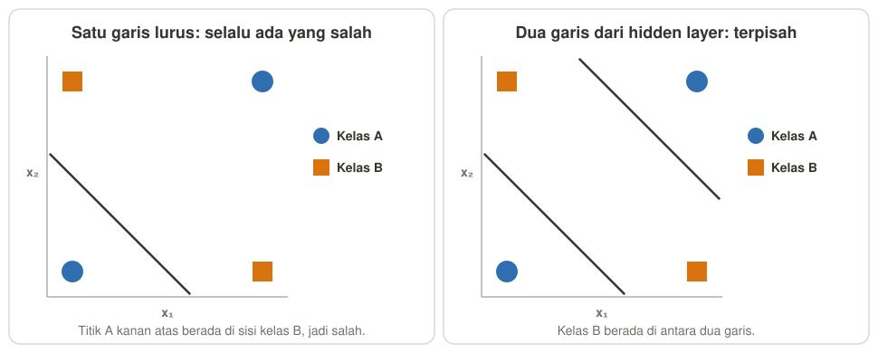
Tabel Ringkasan Perbandingan Linear Model vs Deep Learning
| Aspek | Linear model | Deep learning |
|---|---|---|
| Cara kerja | Satu rumus: fitur dikali weight, lalu dijumlahkan | Banyak layer yang mengolah data menjadi fitur baru |
| Fitur | Dibuat manusia (feature engineering) | Dipelajari sendiri dari data |
| Kelebihan | Sederhana, cepat dilatih, cukup dengan data sedikit, mudah dijelaskan | Bisa mempelajari pola non-linear yang rumit, dan bekerja langsung pada data mentah |
| Kekurangan | Dengan fitur mentah gagal pada pola non-linear, dan bergantung pada feature engineering | Butuh data banyak dan komputasi besar (GPU), sulit dijelaskan, dan mudah overfit kalau datanya sedikit |
| Cocok untuk data | Data tabel yang polanya sederhana | Data mentah: gambar, suara, teks |
| Contoh penggunaan | Prediksi harga rumah, prediksi nilai dari jam belajar, skor risiko kredit yang harus bisa dijelaskan | Pengenalan wajah, speech recognition, penerjemahan, chatbot, pembuatan gambar |
| Contoh model | Linear regression, logistic regression, perceptron | MLP, CNN, GAN, autoencoder |
2. Model Training & Evaluation
Training
Training adalah proses mengubah weight sedikit demi sedikit supaya kesalahan model makin kecil.
![Flowchart tahap training, dua kolom Tahap dan Komponen di tahap ini. Urutan: Sebelum mulai weight awal (Initialization) lalu 1. Ambil satu batch data (Ukuran batch, Regularization augmentation) lalu 2. Forward model menebak (Activation function, Regularization dropout) lalu 3. Loss ukur kesalahan (Loss function, Regularization L2) lalu 4. Backward hitung gradient (Chain rule, Vanishing/exploding/dying ReLU) lalu 5. Update geser weight (Optimizer, learning rate, Learning rate terlalu besar/kecil) lalu Akhir epoch cek validation (Regularization early stopping, Underfitting/overfitting). Panah melingkar menandakan ulangi per batch (tahap 1-5) dan ulangi per epoch.](images/training_flowchart.png)
0. Initialization
Sebelum training dimulai, semua weight harus punya nilai awal. Initialization adalah cara untuk memilih nilai tersebut.
Kalau nilainya buruk, sinyal bisa mengecil atau membesar sejak awal, jadi training lambat atau gagal.
Aturan utama: initialization mana? Lihat Activation di Hidden Layernya.
| Pilih | kalau Activation Hidden Layernya … | Penjelasan |
|---|---|---|
| He | ReLU | Rentang angkanya dibuat lebih lebar, karena ReLU membuang sekitar separuh sinyal. |
| Xavier | sigmoid atau tanh | Rentang angkanya disesuaikan supaya sinyal tetap stabil antar layer. |
| Uniform | Pilihan bawaan | Mudah dipakai, tapi kadang tidak stabil. |
Xavier dan He sama-sama mengisi weight dengan angka acak yang rentangnya disesuaikan dengan ukuran layer.
1. Ambil Batch Data
Sebenarnya model bisa update weight untuk setiap baris data (Stochastic Gradient Descent), namun hasilnya tidak stabil.
Karena itu, cara yang lebih umum adalah mini-batch atau batch gradient descent.
| Pilih | Artinya | Pakai kalau | Alasan |
|---|---|---|---|
| Mini-batch | Weight diubah setelah melihat sebagian kecil data, misalnya 32 data | Hampir selalu | Kompromi antara stabil dan cepat |
| Batch gradient descent | Weight diubah setelah melihat semua data | Datanya kecil | Stabil, tapi lambat mencapai konvergen karena satu update harus menghitung semua data, sehingga perkalian matriksnya (MatMul) besar |
| Stochastic gradient descent (SGD) | Weight diubah setelah melihat 1 data | Jarang dipakai murni | Cepat, tapi arahnya noisy karena satu update hanya memakai 1 data |
2. Forward Propagation
Data mengalir dari layer pertama ke layer terakhir, lalu keluar sebagai tebakan.
Di setiap neuron, Activation Function mengolah hasil hitungan sebelum diteruskan ke layer berikutnya. Inilah yang membuat model bisa mempelajari pola non-linear.
Activation di hidden layer
| Activation Func. | Pakai kalau | Alasan |
|---|---|---|
| ReLU | Hidden layer, hampir selalu (default) | Sederhana, dan gradient-nya tidak menyusut untuk input positif |
| LeakyReLU | Banyak neuron ReLU mati | Input negatif tetap punya gradient kecil |
| Sigmoid atau tanh | Jaringan dangkal | Di jaringan dalam, gradient-nya cepat mengecil (Vanishing Gradient) |
Activation di output layer
Hidden layer memakai activation supaya model bisa mempelajari pola non-linear, sedangkan output layer memakai activation supaya bentuk tebakannya sesuai tugas.
| Tugas | Neuron output | Activation | Bentuk tebakan |
|---|---|---|---|
| Regresi | 1 | Tidak ada (atau ReLU kalau target tidak mungkin negatif) | Satu angka |
| Klasifikasi 2 kelas | 1 | Sigmoid | Satu peluang, 0 sampai 1 |
| Klasifikasi lebih dari 2 kelas | Sebanyak kelas | Softmax | Peluang tiap kelas, jumlahnya 1 |
Masalah di tahap ini: Dying ReLU
Dying ReLU adalah kondisi saat neuron ReLU selalu mengeluarkan 0, sehingga neuron itu berhenti belajar selamanya.
- Tanda: banyak neuron selalu bernilai 0, dan loss macet.
- Penyebab: ReLU mengeluarkan 0 untuk input negatif, dan gradient-nya juga 0, jadi weight neuron itu tidak pernah berubah lagi. Learning rate yang terlalu besar sering memicunya.
- Solusi: pakai LeakyReLU atau parametric ReLU, atau kecilkan learning rate.
3. Hitung Loss
Loss adalah angka yang mengukur seberapa salah tebakan model. Training bertujuan untuk mengecilkan nilai ini.
Cara perhitungan loss berbeda-beda tergantung tugas modelnya:
| Pilih | Pakai kalau | Sifat | Cara menghitung |
|---|---|---|---|
| MSE (Mean Squared Error) | Regresi | Error besar dihukum jauh lebih berat | Rata-rata dari selisih yang dikuadratkan |
| MAE (Mean Absolute Error) | Regresi yang data train punya nilai ekstrem (outlier) | Lebih tahan terhadap outlier | Rata-rata dari selisih tanpa tanda minus |
| Binary cross entropy | Klasifikasi 2 kelas | Tebakan yang yakin tapi salah dihukum sangat berat | Label 1: −ln(peluang). Label 0: −ln(1 − peluang) |
| Cross entropy | Klasifikasi lebih dari 2 kelas | Sama seperti binary cross entropy | −ln(peluang kelas yang benar) |
4. Backward Propagation
Dari tahap loss, model sudah tahu seberapa salah tebakannya. Tapi model belum tahu weight mana yang harus diubah, dan ke arah mana.
Backpropagation adalah cara menghitung seberapa besar setiap weight ikut menyebabkan kesalahan, dengan memakai chain rule dari layer terakhir ke layer pertama.
Hasilnya disebut gradient, yaitu nilai untuk setiap weight yang menunjukkan dua hal:
- Tanda (+/−): Gradient positif berarti loss naik kalau weight dibesarkan, jadi weight perlu dikecilkan. Gradient negatif berarti loss naik kalau weight dikecilkan, jadi weight perlu dibesarkan.
- Besar nilainya: makin besar nilainya, makin besar pengaruh weight itu terhadap loss saat ini, jadi makin besar gradient-nya, makin besar perubahan weight-nya.
Masalah di tahap ini: Vanishing dan Exploding Gradient
Karena chain rule mengalikan turunan di setiap layer, layer awal punya rantai perkalian paling panjang. Akibatnya, gradient di layer awal sangat bergantung pada angka-angka yang dikalikan.
Vanishing gradient adalah kondisi saat gradient makin kecil sampai hampir nol, sehingga layer awal hampir tidak belajar.
- Tanda: loss turun sangat lambat & layer awal tidak berubah
- Penyebab: Turunan kecil (sigmoid maks 0,25) dikalikan berulang di banyak layer
- Solusi: pakai ReLU dengan He initialization, karena turunan ReLU bernilai 1 untuk input positif. Bisa juga memakai BatchNorm atau residual connection.
Exploding gradient adalah kondisi saat gradient makin besar sampai tidak terkendali, sehingga update weight terlalu jauh.
- Tanda: loss melompat-lompat atau menjadi NaN.
- Penyebab: Weight atau gradient yang besar dikalikan berulang.
- Solusi: turunkan learning rate, pakai initialization yang sesuai, atau BatchNorm.
BatchNorm adalah layer yang menormalkan output dari layer sebelumnya.
Residual connection adalah jalan pintas yang menambahkan input layer ke output-nya, supaya gradient bisa mengalir langsung ke layer awal.
5. Update
Dari tahap backward, model sudah punya gradient untuk setiap weight. Sekarang weight benar-benar diubah, dan yang mengubahnya adalah optimizer.
Optimizer adalah aturan yang menentukan bagaimana cara weight diubah berdasarkan nilai gradiennya. Gradient hanya memberi tahu arah dan seberapa besar pengaruh setiap weight, jadi optimizer masih perlu tahu seberapa jauh harus melangkah. Jarak langkah itu diatur oleh learning rate, yaitu angka yang kita tentukan sebelum training.
Memilih learning rate
| Learning rate | Yang terjadi | Tanda di loss |
|---|---|---|
| Terlalu besar | Langkahnya bisa melompati titik optimal | Naik turun dan makin besar (divergen) |
| Pas | Langkahnya makin mendekati titik terbaik | Turun dengan stabil |
| Terlalu kecil | Langkahnya sangat pendek | Turun sangat lambat |
Solusinya bisa memakai learning rate schedule, yaitu learning rate yang diturunkan selama training: langkah besar di awal supaya cepat, lalu langkah kecil di akhir supaya stabil. Contohnya step decay, exponential decay, dan cosine annealing.
Memilih optimizer
| Optimizer | Cara kerja | Pakai kalau | Kekurangan |
|---|---|---|---|
| Adam | Gabungan Momentum dan RMSProp, jadi langkahnya menyesuaikan sendiri | Default untuk kebanyakan tugas | Bisa overfit |
| SGD | Langsung memakai gradient dan learning rate | Ingin kontrol penuh | Sensitif terhadap learning rate |
| Momentum | Langkah sekarang ikut membawa arah langkah sebelumnya, seperti bola menggelinding | Masalah convex, atau langkahnya zig-zag | Perlu tuning |
| RMSProp | Setiap weight punya LR sendiri, dan nilainya mengecil kalau gradient-nya sering besar serta sebaliknya | Sering dipakai di RNN | Sensitif terhadap pengaturan |
Catatan: kata SGD di tabel ini adalah nama optimizer. Kata yang sama juga dipakai untuk "update per 1 data" di tahap ambil data, jadi perhatikan konteksnya.
Setelah update, model mengambil batch berikutnya dan mengulang tahap 1 sampai 5.
Satu epoch selesai kalau seluruh data train sudah terpakai satu kali.
Akhir Epoch: Cek Hasil Belajar
Di akhir setiap epoch, kita membandingkan training loss dengan validation loss, yaitu loss pada data yang tidak dipakai untuk belajar.
Masalah di tahap ini: Underfitting dan Overfitting
Solusi overfitting: Regularization
Regularization adalah teknik yang ditambahkan ke training supaya model tidak menghafal. Ini bukan tahap baru, karena setiap teknik menempel ke tahap yang sudah dibahas.
| Pilih | Menempel di | Pakai kalau | Cara kerja |
|---|---|---|---|
| Data augmentation | Tahap 1 | Data gambar sedikit | Rotasi, crop, dan flip acak, jadi data terlihat lebih beragam |
| Dropout | Tahap 2 | Fully connected layer yang besar | Mematikan 20–50% neuron secara acak, jadi model tidak bergantung pada neuron tertentu |
| L2 (weight decay) | Tahap 3 | Weight membesar | Loss ditambah penalti untuk weight besar, jadi model lebih sederhana |
| Early stopping | Akhir epoch | Hampir selalu, karena paling murah | Berhenti saat validation loss mulai naik, lalu memakai weight terbaiknya |
Dropout dan augmentation hanya aktif saat training, karena saat evaluasi model harus melihat data apa adanya.
Tabel Ringkasan: gejala, masalah, dan solusinya
| Gejala | Masalah | Terjadi di | Solusi utama |
|---|---|---|---|
| Banyak neuron selalu 0, loss macet | Dying ReLU | Tahap 2 | LeakyReLU, learning rate lebih kecil |
| Loss turun sangat lambat | Vanishing gradient, atau learning rate terlalu kecil | Tahap 4 atau 5 | ReLU dengan He initialization, BatchNorm, naikkan learning rate |
| Loss naik turun liar, membesar, atau NaN | Exploding gradient, atau learning rate terlalu besar | Tahap 4 atau 5 | Turunkan learning rate, BatchNorm |
| Training dan validation loss sama-sama tinggi | Underfitting | Akhir epoch | Model lebih besar, training lebih lama |
| Training loss turun, validation loss naik | Overfitting | Akhir epoch | Early stopping, dropout, L2, augmentation |
Evaluation
Evaluation adalah proses mengukur seberapa baik model kita bekerja pada data yang tidak dipakai saat training (Test Set).
Ukuran yang dipakai untuk menilainya disebut metric, yaitu angka yang menunjukkan kualitas tebakan model, misalnya accuracy untuk klasifikasi atau MAE untuk regresi.
Loss dan metric punya tugas berbeda: loss dipakai model untuk belajar, sedangkan metric dipakai manusia untuk menilai.
Metric yang digunakan untuk evaluasi harus sesuai dengan tujuan model dan jenis kesalahan yang paling krusial.
| Metric | Menilai apa | Dipakai kalau |
|---|---|---|
| Accuracy = (TP + TN) ÷ total | Berapa persen semua tebakan yang benar | Klasifikasi, dan jumlah data tiap kelas seimbang |
| Precision = TP ÷ (TP + FP) | Dari yang ditebak positif, berapa yang benar positif | Klasifikasi, dan alarm palsu mahal. Contoh: email penting masuk folder spam |
| Recall = TP ÷ (TP + FN) | Dari yang benar positif, berapa yang berhasil tertangkap | Klasifikasi, dan kasus yang lolos mahal. Contoh: fraud atau penyakit yang tidak terdeteksi |
| F1 = 2PR ÷ (P + R) | Keseimbangan precision dan recall | Klasifikasi, jumlah data tiap kelas tidak seimbang, dan keduanya sama penting |
| AUC | Seberapa baik model memisahkan dua kelas di berbagai batas keputusan. Nilai 0,5 setara menebak acak, dan 1 berarti sempurna | Klasifikasi, dan batas keputusannya belum ditentukan |
| MSE | Rata-rata kesalahan, dengan error besar dihukum lebih berat | Regresi, dan error besar sangat merugikan |
| MAE | Rata-rata besar kesalahan, dalam satuan yang sama dengan data | Regresi, ada outlier, atau hasilnya perlu mudah dibaca |
| R² | Seberapa baik model dibanding selalu menebak rata-rata | Regresi, dan ingin tahu seberapa baik model menjelaskan data |
Confusion matrix: TP, FP, FN, dan TN
Confusion matrix adalah tabel yang menunjukkan pola kesalahan model, dengan membandingkan kondisi asli dan tebakan.
Contohnya, model mendeteksi fraud pada 100 transaksi, dengan fraud sebagai kelas positif.
- TP (True Positive): fraud yang ditebak fraud.
- TN (True Negative): transaksi aman yang ditebak aman.
- FP (False Positive): transaksi aman yang ditebak fraud, atau alarm palsu.
- FN (False Negative): fraud yang ditebak aman, atau kasus yang lolos.
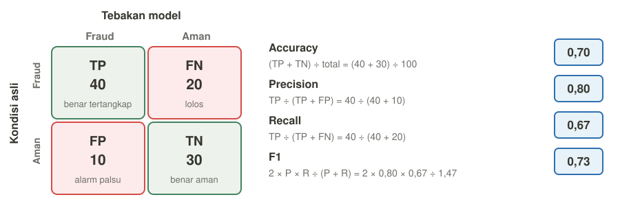
Recall 0,67 artinya sepertiga kasus fraud masih lolos. Kalau fraud yang lolos sangat mahal, recall ini perlu ditingkatkan walaupun accuracy-nya 0,70.
Train, validation, dan test
- Train: dipakai untuk mengubah weight.
- Validation: dipakai untuk memantau overfitting dan memilih pengaturan model, misalnya kapan early stopping dilakukan. Weight tidak diubah dari data ini.
- Test: dipakai untuk penilaian akhir setelah model selesai dipilih.
Kalau data test ikut dipakai untuk memilih model, nilai akhirnya bisa terlihat terlalu bagus. Penjelasan pembagian ini adalah tambahan, karena PPT hanya menyebut validation dan evaluasi.
3. CNN
Cheat sheet
C = channel, T = tinggi, L = lebar, K = ukuran kernel, P = padding, S = stride.
| Komponen | Tugas | Ukuran output | Jumlah parameter |
|---|---|---|---|
| Convolution | Mencari pola dengan kernel, untuk mendapatkan fitur. Makin dalam layernya, makin spesifik fiturnya, dari tepi sampai bentuk. | C = jumlah kernel. T dan L = (T − K + 2P) ÷ S + 1, lalu hasil akhirnya dibulatkan ke bawah | (K × K × C input + 1) × jumlah kernel Conv |
| ReLU | Membuat model non-linear, supaya bisa mempelajari pola yang rumit. | Tetap | 0 |
| Max atau average pooling | Memperkecil ukuran, supaya komputasi lebih ringan, overfitting berkurang, dan hasilnya tahan terhadap geseran kecil. | C tetap. T dan L = (T − K + 2P) ÷ S + 1, lalu hasil akhirnya dibulatkan ke bawah. Pooling 2×2 defaultnya: K=2, P=0, S=2. | 0 |
| Flatten | Meratakan jadi satu baris, supaya bisa masuk ke fully connected, yang hanya menerima input satu baris. | C × T × L | 0 |
| Fully connected | Menggabungkan semua fitur yang ditemukan, supaya menjadi keputusan atau tebakan. | Jumlah neuron | (jumlah input + 1) × jumlah neuron |
| BatchNorm | Menormalkan output layer di setiap batch, supaya training lebih stabil. | Tetap | 2 × C, yaitu γ dan β untuk setiap channel |
| Dropout | Mematikan sebagian neuron secara acak saat training, supaya model tidak bergantung pada neuron tertentu. | Tetap | 0 |
| Softmax atau sigmoid | Mengubah output jadi peluang, supaya kelas dengan peluang terbesar menjadi jawaban. | Tetap | 0 |
Kerjakan dari atas ke bawah: cari ukuran output dulu, lalu hitung parameternya, karena layer berikutnya memakai ukuran itu sebagai input.
Jangan sampai salah:
- C input diambil dari output layer sebelumnya, bukan selalu 1 atau 3.
- Jangan lupa + 1 di convolution dan fully connected, kecuali soal menyebut tanpa bias.
- Padding dan stride tidak masuk rumus parameter, karena keduanya hanya mengubah ukuran output.
- Hasil ukuran yang tidak bulat dibulatkan ke bawah. Contohnya, (32 − 3 + 2 × 1) ÷ 2 + 1 = 16,5, jadi ukurannya 16.
- Di TensorFlow, padding='same' memakai rumus T output = T input ÷ S, lalu dibulatkan ke atas.
Komponen dan cara kerja tiap layer
Urutan yang umum adalah Convolution, ReLU, dan Pooling, yang bisa diulang beberapa kali, lalu Flatten, Fully connected, dan Output.
Pola umumnya: tinggi dan lebar mengecil, sedangkan jumlah channel bertambah.
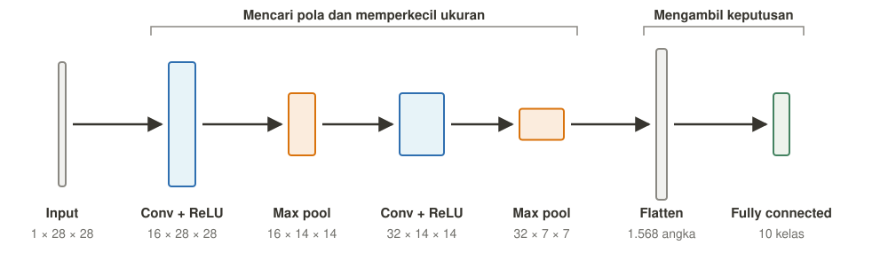
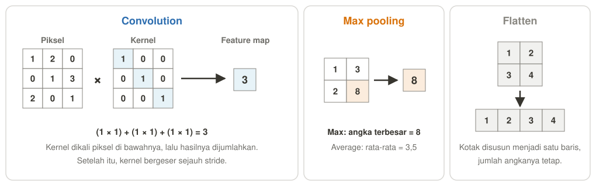
- Convolution: kernel digeser ke seluruh gambar. Di setiap posisi, kernel dikali piksel di bawahnya lalu dijumlahkan, sehingga satu kernel menghasilkan satu feature map.
- ReLU: angka negatif menjadi 0, dan angka positif tetap.
- Pooling: setiap kotak diringkas menjadi satu angka. Max mengambil angka terbesar, sedangkan average mengambil rata-rata.
- Flatten: feature map disusun menjadi satu baris, dan jumlah angkanya tetap.
- Fully connected: setiap input terhubung ke semua neuron, sama seperti layer di MLP.
- Output: softmax memberi peluang tiap kelas, sedangkan sigmoid memberi satu peluang untuk 2 kelas.
BatchNorm dan dropout bersifat tambahan. Di PPT, keduanya disarankan untuk performa dan mencegah overfitting.
Istilah
- Kernel adalah kotak kecil berisi weight yang digeser ke seluruh gambar untuk mencari satu pola, misalnya tepi.
- Feature map adalah peta hasil pencarian satu kernel, yang menunjukkan di mana pola itu ditemukan.
- Channel adalah jumlah lapisan angka pada data. Gambar hitam putih punya 1 channel, gambar RGB punya 3, dan setelah convolution jumlahnya sama dengan jumlah feature map.
- Stride adalah jarak geser kernel.
- Padding adalah tambahan angka nol di pinggir gambar.
Kenapa rumus parameternya begitu?
- K × K: kernel berukuran K × K punya satu weight di setiap kotaknya.
- × C input: kernel harus melihat semua channel input, jadi kotak-kotak itu ada di setiap channel.
- + 1: setiap kernel atau neuron punya satu bias.
- × jumlah kernel atau neuron: setiap kernel atau neuron punya weight sendiri.
Tinggi dan lebar gambar tidak masuk rumus convolution, karena weight kernel yang sama dipakai ulang di semua posisi.
Cara membaca bentuk arsitektur
Posisi channel bisa berbeda, jadi cek dulu sebelum menghitung. Biasanya bakal ada pasangan angka yang sama, yang beda sendiri itu channel.
- 1 × 28 × 28 (kode PyTorch): channel di depan, yaitu 1 channel.
- 6@28x28 (gambar LeNet-5): channel sebelum @, yaitu 6 channel.
- 224x224x64 (gambar VGG): channel di belakang, yaitu 64 channel.
Contoh: SimpleCNN
Arsitektur dari PPT sesi 4, dengan input 1 × 28 × 28. Semua convolution memakai K = 3, P = 1, S = 1, dan max pooling memakai K = 2, P = 0, S = 2.
| Layer | Ukuran output | Jumlah parameter |
|---|---|---|
| Input | 1 × 28 × 28 | 0 |
| Conv 16 kernel | (28 − 3 + 2×1) ÷ 1 + 1 = 28, jadi 16 × 28 × 28 | (3×3×1 + 1) × 16 = 160 |
| Max pool | (28 − 2 + 2×0) ÷ 2 + 1 = 14, jadi 16 × 14 × 14 | 0 |
| Conv 32 kernel | (14 − 3 + 2×1) ÷ 1 + 1 = 14, jadi 32 × 14 × 14 | (3×3×16 + 1) × 32 = 4.640 |
| Max pool | (14 − 2 + 2×0) ÷ 2 + 1 = 7, jadi 32 × 7 × 7 | 0 |
| Flatten | 32 × 7 × 7 = 1.568 | 0 |
| Fully connected 10 | 10 | (1.568 + 1) × 10 = 15.690 |
| Total | 160 + 4.640 + 15.690 = 20.490 |
ReLU tidak ditulis di tabel, karena ukuran dan parameternya tidak berubah.
Soal latihan
Soal 1: LeNet-5
Input 1 × 32 × 32. Kernel convolution berukuran 5 × 5, tanpa padding. Urutan ukuran output dari gambar arsitekturnya adalah 6@28x28, 6@14x14, 16@10x10, 16@5x5, lalu fully connected 120, 84, dan 10. Hitung jumlah parameter setiap layer dan totalnya.
Lihat jawaban:
| Layer | Hitungan | Parameter |
|---|---|---|
| Conv 6 kernel, output 6@28x28 | (5×5×1 + 1) × 6 = 26 × 6 | 156 |
| Pooling, output 6@14x14 | 0 | |
| Conv 16 kernel, output 16@10x10 | (5×5×6 + 1) × 16 = 151 × 16 | 2.416 |
| Pooling, output 16@5x5 | 0 | |
| Flatten | 16×5×5 = 400 angka | 0 |
| Fully connected 120 | (400+1) × 120 | 48.120 |
| Fully connected 84 | (120+1) × 84 | 10.164 |
| Output 10 | (84+1) × 10 | 850 |
| Total | 156+2.416+48.120+10.164+850 | 61.706 |
Soal 2: potongan VGG
Input 224 × 224 × 3. Blok pertama berisi dua conv 3 × 3 dengan 64 kernel dan padding 1. Di bagian akhir, output pooling 7 × 7 × 512 masuk ke fully connected 4.096 neuron. Hitung parameter ketiga layer itu.
Lihat jawaban:
| Layer | Hitungan | Parameter |
|---|---|---|
| Conv pertama, output 224×224×64 | (3×3×3+1) × 64 = 28 × 64 | 1.792 |
| Conv kedua, output 224×224×64 | (3×3×64+1) × 64 = 577 × 64 | 36.928 |
| Flatten | 7×7×512 = 25.088 angka | 0 |
| Fully connected 4.096 | (25.088+1) × 4.096 | 102.764.544 |
Perhatikan bahwa fully connected jauh lebih mahal daripada conv, karena tidak memakai weight sharing.
Soal 3: dari kode Torch
Input 3 × 32 × 32. Tentukan angka yang hilang di Linear, ukuran output setiap layer, jumlah parameter setiap layer, dan totalnya.
nn.Conv2d(3, 8, kernel_size=3, stride=1, padding=1),
nn.ReLU(),
nn.MaxPool2d(2),
nn.Conv2d(8, 16, 5),
nn.ReLU(),
nn.Conv2d(16, 32, kernel_size=4, stride=2, padding=1),
nn.ReLU(),
nn.MaxPool2d(2),
nn.Flatten(),
nn.Linear(?, 64),
nn.ReLU(),
nn.Linear(64, 5)Lihat jawaban:
Cara membaca kode:
- Conv2d(C input, jumlah kernel, K, S, P): kalau stride dan padding tidak ditulis, nilainya S = 1 dan P = 0.
- MaxPool2d(2): K = 2, dan kalau stride tidak ditulis, nilainya sama dengan K, jadi S = 2. Padding-nya P = 0.
| Layer | Ukuran output | Jumlah parameter |
|---|---|---|
| Conv2d(3, 8, K=3, S=1, P=1) | (32−3+2×1)÷1+1 = 32, jadi 8×32×32 | (3×3×3+1)×8 = 224 |
| MaxPool2d(2) | (32−2+2×0)÷2+1 = 16, jadi 8×16×16 | 0 |
| Conv2d(8, 16, K=5, S=1, P=0) | (16−5+2×0)÷1+1 = 12, jadi 16×12×12 | (5×5×8+1)×16 = 3.216 |
| Conv2d(16, 32, K=4, S=2, P=1) | (12−4+2×1)÷2+1 = 6, jadi 32×6×6 | (4×4×16+1)×32 = 8.224 |
| MaxPool2d(2) | (6−2+2×0)÷2+1 = 3, jadi 32×3×3 | 0 |
| Flatten | 32×3×3 = 288, jadi angka yang hilang adalah 288 | 0 |
| Linear(288, 64) | 64 | (288+1)×64 = 18.496 |
| Linear(64, 5) | 5 | (64+1)×5 = 325 |
| Total | 224+3.216+8.224+18.496+325 = 30.485 |
Soal 4: hanya tahu ukuran output
Jenis layernya tidak diberi tahu. Convolution memakai stride 1. Kalau ukurannya tetap, K = 3 dan padding 1. Kalau ukurannya mengecil, tidak ada padding. Tentukan jenis setiap layer, lalu hitung jumlah parameternya.
Urutan ukuran: 1 × 64 × 64, lalu 8 × 64 × 64, 8 × 32 × 32, 16 × 28 × 28, 16 × 14 × 14, 3.136, 100, dan 4.
Lihat jawaban:
Cara mengenali layer dari perubahan ukuran:
- Channel berubah: convolution.
- Channel tetap, tinggi dan lebar mengecil: biasanya pooling, terutama kalau ukurannya menjadi setengah. Conv tanpa padding juga bisa memberi perubahan seperti ini, jadi cek penjelasan di soal.
- Tiga angka menjadi satu angka: flatten.
- Satu angka menjadi satu angka lain: fully connected.
- Ukuran tidak berubah: ReLU atau softmax, dan parameternya 0.
Ukuran output saja tidak selalu cukup untuk menentukan K. Misalnya, 32 menjadi 28 bisa berasal dari K=5 dengan P=0, atau K=7 dengan P=1. Karena itu, K atau padding harus diberi tahu di soal. Kalau stride 1 dan tidak ada padding, K = T input − T output + 1.
| Perubahan ukuran | Jenis layer | Jumlah parameter |
|---|---|---|
| 1×64×64 ke 8×64×64 | Conv 8 kernel, K=3 | (3×3×1+1)×8 = 80 |
| 8×64×64 ke 8×32×32 | Max pooling 2×2 | 0 |
| 8×32×32 ke 16×28×28 | Conv 16 kernel, K = 32−28+1 = 5 | (5×5×8+1)×16 = 3.216 |
| 16×28×28 ke 16×14×14 | Max pooling 2×2 | 0 |
| 16×14×14 ke 3.136 | Flatten, karena 16×14×14 = 3.136 | 0 |
| 3.136 ke 100 | Fully connected | (3.136+1)×100 = 313.700 |
| 100 ke 4 | Fully connected | (100+1)×4 = 404 |
| Total | 80+3.216+313.700+404 = 317.400 |
ReLU tidak terlihat dari urutan ukuran, tapi itu tidak mengubah hasil karena parameternya 0.
Soal 5: dari kode TensorFlow
Tentukan ukuran output setiap layer, jumlah parameter setiap layer, dan totalnya.
model = tf.keras.Sequential([
tf.keras.layers.Input(shape=(64, 64, 3)),
tf.keras.layers.Conv2D(16, (3, 3), padding='same', activation='relu'),
tf.keras.layers.MaxPooling2D((2, 2)),
tf.keras.layers.Conv2D(32, (5, 5), activation='relu'),
tf.keras.layers.MaxPooling2D((2, 2)),
tf.keras.layers.Conv2D(64, (3, 3), strides=2, padding='same', activation='relu'),
tf.keras.layers.Flatten(),
tf.keras.layers.Dense(128, activation='relu'),
tf.keras.layers.Dense(10, activation='softmax')
])Lihat jawaban:
Cara membaca kode:
- Urutan ukuran: TensorFlow menulis channel di belakang, jadi (64, 64, 3) artinya T=64, L=64, dan C=3.
- Conv2D(jumlah kernel, (K, K)): C input tidak ditulis, jadi ambil dari output layer sebelumnya. Kalau stride tidak ditulis, S=1.
- padding='valid': ini nilai kalau padding tidak ditulis, dan artinya P=0.
- padding='same': T output = T input ÷ S, dibulatkan ke atas.
- MaxPooling2D((2,2)): K=2, P=0, dan kalau stride tidak ditulis, S=2.
- Dense(jumlah neuron): sama dengan fully connected, dan jumlah input diambil dari output layer sebelumnya.
| Layer | Ukuran output | Jumlah parameter |
|---|---|---|
| Conv2D(16, K=3, same) | 64÷1 = 64, jadi 64×64×16 | (3×3×3+1)×16 = 448 |
| MaxPooling2D((2,2)) | (64−2+2×0)÷2+1 = 32, jadi 32×32×16 | 0 |
| Conv2D(32, K=5, valid) | (32−5+2×0)÷1+1 = 28, jadi 28×28×32 | (5×5×16+1)×32 = 12.832 |
| MaxPooling2D((2,2)) | (28−2+2×0)÷2+1 = 14, jadi 14×14×32 | 0 |
| Conv2D(64, K=3, S=2, same) | 14÷2 = 7, jadi 7×7×64 | (3×3×32+1)×64 = 18.496 |
| Flatten | 7×7×64 = 3.136 | 0 |
| Dense(128) | 128 | (3.136+1)×128 = 401.536 |
| Dense(10) | 10 | (128+1)×10 = 1.290 |
| Total | 448+12.832+18.496+401.536+1.290 = 434.602 |
Activation yang ditulis di dalam Conv2D dan Dense tidak menambah parameter.
4. Generative Model (GAN)
1. Prinsip kerja generative model
Model yang sudah kita bahas tugasnya menebak, misalnya diberi foto lalu menjawab "ini kucing". Model seperti ini disebut discriminative model, yang mempelajari P(y|x), yaitu peluang label kalau datanya diketahui.
Generative model adalah model yang belajar membuat data baru yang mirip data latih, misalnya foto wajah orang yang sebenarnya tidak ada. Model ini mempelajari P(x) atau P(x|y), yaitu bentuk data itu sendiri.
Masalahnya, foto buatan model tidak punya satu jawaban benar untuk dibandingkan. Jadi, loss biasa sulit menilai apakah fotonya sudah bagus.
GAN (Generative Adversarial Network) menyelesaikan masalah ini dengan melatih penilainya juga, sehingga ada dua neural network yang saling bersaing.
Generative model lain: VAE dan Diffusion
GAN bukan satu-satunya generative model. Ketiganya sama-sama membuat data baru, tapi prinsip kerjanya berbeda.
| Aspek | GAN | VAE | Diffusion |
|---|---|---|---|
| Prinsip kerja | Generator dan discriminator saling bersaing | Encoder dan decoder belajar lewat latent berupa distribusi | Noise ditambahkan bertahap, lalu model belajar menghapusnya |
| Kualitas | Tinggi | Sedang | Sangat tinggi |
| Stabilitas training | Rendah | Tinggi | Tinggi |
| Kecepatan membuat data | Cepat | Cepat | Lambat |
| Contoh aplikasi | Wajah sintetis, super-resolution | Representation learning, deteksi anomali | Text-to-image, inpainting, video |
Cara kerja Diffusion:
- Forward process: data diberi noise sedikit demi sedikit.
- Reverse process: model belajar menebak noise di setiap langkah, lalu menghapusnya.
- Membuat data baru: mulai dari noise murni, lalu noise dihapus bertahap sampai menjadi data.
Diffusion lebih tahan terhadap mode collapse, tapi proses membuat datanya lebih lambat karena harus melewati banyak langkah.
2. Arsitektur GAN
| Pemain | Input | Output | Tujuan |
|---|---|---|---|
| Generator (G) | Noise, yaitu deretan angka acak | Data palsu | Membuat data palsu yang dikira asli oleh D |
| Discriminator (D) | Data asli atau data palsu | Peluang data itu asli, 0 sampai 1 | Membedakan data asli dan data palsu |
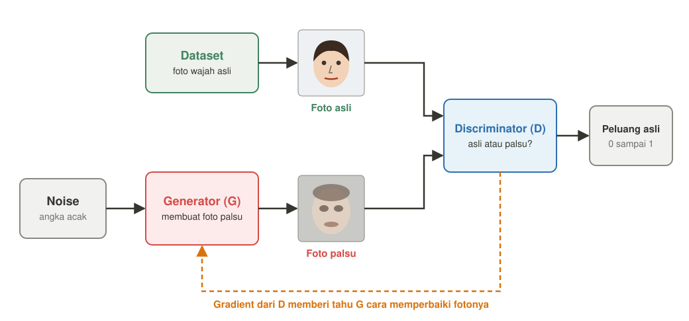
- D sebagai classifier: D adalah binary classifier, yaitu model yang mengelompokkan data ke dua kelas: asli atau palsu.
- Noise: dipakai supaya hasil G beragam, karena angka acak yang berbeda menghasilkan foto yang berbeda.
- Data latih: kumpulan data asli, misalnya foto wajah, dan hanya D yang melihatnya.
- Setelah training: biasanya G yang dipakai untuk membuat data baru.
Bayangkan pemalsu uang (G) melawan polisi (D): makin jeli polisinya, pemalsunya harus makin terampil. Bedanya, pemalsu sungguhan bisa melihat uang asli, sedangkan G tidak pernah melihat data asli.
3. Proses training
Training GAN disebut adversarial training, yaitu G dan D dilatih bergantian sambil saling bersaing.
Di setiap batch, D dilatih lebih dulu, lalu G. Saat satu model dilatih, weight model lainnya tidak diubah.
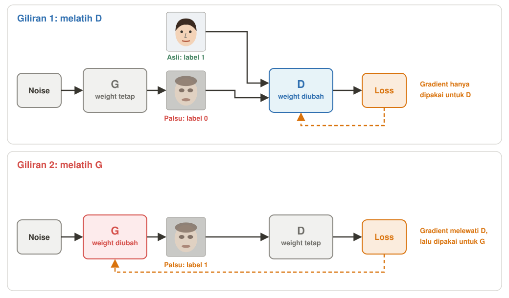
Giliran 1: melatih D
Kesalahan D adalah menilai foto asli sebagai palsu, atau menilai foto palsu sebagai asli.
- Jalankan G untuk mengubah noise menjadi foto palsu.
- Beri D foto asli dengan label 1 dan foto palsu dengan label 0.
- Hitung rata-rata loss foto asli dan rata-rata loss foto palsu, lalu jumlahkan menjadi loss D.
- Backpropagation menghitung gradient, lalu update weight D saja.
| Foto | Label | Output D | Hitungan | Loss | Artinya |
|---|---|---|---|---|---|
| Asli | 1 | 0,9 | −ln(0,9) | 0,11 | D benar |
| Palsu | 0 | 0,2 | −ln(1−0,2) | 0,22 | D benar |
| Asli | 1 | 0,1 | −ln(0,1) | 2,30 | D salah, karena foto asli dinilai palsu |
| Palsu | 0 | 0,9 | −ln(1−0,9) | 2,30 | D salah, karena foto palsu dinilai asli |
Jadi, dengan satu foto asli dan satu foto palsu:
- D benar: loss D = 0,11 + 0,22 = 0,33.
- D salah: loss D = 2,30 + 2,30 = 4,60.
Loss D besar berarti D banyak salah, dan gradient-nya mengubah weight D supaya output berikutnya lebih dekat ke label.
Giliran 2: melatih G
Kesalahan G adalah membuat foto yang masih dinilai palsu oleh D.
- Buat foto palsu dari noise, lalu beri ke D.
- Hitung loss dengan label 1, karena G ingin fotonya dikira asli.
- Backpropagation mengalirkan gradient melewati D sampai ke G.
- Update weight G saja.
| Output D untuk foto palsu | Hitungan | Loss G | Artinya |
|---|---|---|---|
| 0,2 | −ln(0,2) | 1,61 | G gagal menipu D |
| 0,5 | −ln(0,5) | 0,69 | D ragu-ragu |
| 0,9 | −ln(0,9) | 0,11 | G berhasil menipu D |
Loss G besar berarti foto G masih mudah dikenali sebagai palsu, dan gradient-nya mengubah weight G supaya output D untuk foto berikutnya naik.
Kode training di PPT
# Train Discriminator
loss_D = loss_fn(D(real), 1) + loss_fn(D(fake.detach()), 0)
loss_D.backward()
# Train Generator
loss_G = loss_fn(D(fake), 1)
loss_G.backward()- loss_fn(D(real), 1): foto asli harus dinilai asli.
- loss_fn(D(fake.detach()), 0): foto palsu harus dinilai palsu. Fungsi detach() menghentikan gradient supaya tidak mengalir ke G.
- loss_fn(D(fake), 1): G ingin foto palsunya dinilai asli.
Kenapa G akhirnya bisa membuat wajah?
G tidak diajari cara membuat wajah. G hanya terus berubah supaya D menjawab "asli", dan yang dikenal D sebagai asli adalah wajah.
- Awalnya acak: weight G masih acak, jadi gambarnya hanya bintik-bintik.
- D menilai: D belajar dari foto wajah asli, jadi bintik-bintik itu dinilai palsu.
- G mendapat arah: gradient memberi tahu ke arah mana weight G harus berubah supaya output D naik.
- Diulang ribuan kali: setiap perubahan kecil, tapi gambarnya pelan-pelan makin mirip wajah.
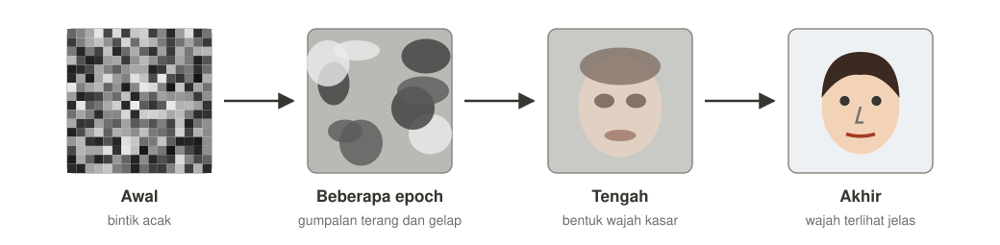
Gambar ini hanya ilustrasi, bukan hasil training sungguhan. Dataset menentukan apa yang akhirnya dibuat G. Kalau D belajar dari foto kucing, G akan membuat gambar kucing.
Kapan G dianggap berhasil?
G berhasil kalau D tidak bisa lagi membedakan foto asli dan foto palsu. Saat itu, D hanya bisa menebak seperti melempar koin, sehingga tebakannya benar sekitar 50%.
Contohnya, D diberi 100 foto yang terdiri dari 50 foto asli dan 50 foto palsu, dan keduanya sudah tidak bisa dibedakan:
| Strategi D | Tebakan yang benar |
|---|---|
| Selalu menjawab asli | 50 foto asli, jadi 50% |
| Selalu menjawab palsu | 50 foto palsu, jadi 50% |
| Menebak acak | Sekitar 50 foto, jadi sekitar 50% |
50% bukan nilai maksimal. Angka ini muncul karena jumlah foto asli dan palsu sama, dan ini adalah kondisi seimbang yang ideal secara teori.
Cara membaca output D untuk foto palsu:
| Output D | Artinya |
|---|---|
| Mendekati 0 | D masih mudah mengenali foto palsu, jadi G masih perlu belajar |
| Sekitar 0,5 | D tidak bisa membedakan, dan ini kondisi seimbang yang ideal |
| Mendekati 1 | D tertipu untuk sementara, lalu D belajar lagi di giliran berikutnya |
Output D sekitar 0,5 belum menjamin fotonya bagus, karena D yang lemah juga bisa memberi nilai itu. Jadi, hasilnya tetap perlu dicek langsung atau dengan FID.
4. Training GAN yang optimal
Karena dua model saling mengejar, training GAN lebih sulit stabil daripada training biasa.
Training dianggap optimal kalau empat target ini tercapai. Setiap target punya masalah yang muncul kalau target itu gagal.
| Target | Masalah kalau gagal | Lakukan ini | Agar apa |
|---|---|---|---|
| 1. Variasi lengkap | Mode collapse: G terus membuat wajah yang mirip, karena wajah itu berhasil menipu D | Deteksi: lihat hasilnya langsung, lalu pantau FID dan IS. Perbaiki: minibatch discrimination, atau Conditional GAN kalau datanya punya label. | Hasil yang seragam cepat ketahuan, dan G terdorong membuat variasi yang lebih lengkap |
| 2. Konvergen | Non-convergence: G dan D terus saling mengalahkan, sehingga loss naik turun tanpa mencapai titik seimbang | Pakai batch normalization, DCGAN untuk gambar, dan BCEWithLogits | Training dan perhitungan loss lebih stabil |
| 3. D dan G seimbang | Vanishing gradient: D terlalu kuat dan selalu tahu mana yang palsu, sehingga G hampir tidak mendapat gradient untuk belajar | Pakai label smoothing atau noise injection, serta LeakyReLU | D tidak terlalu yakin, dan gradient tetap mengalir ke G |
| 4. Kualitas terukur naik | Evaluasi sulit: loss G turun belum tentu berarti fotonya makin bagus | Pakai FID dan IS, serta lihat hasilnya langsung | Kemajuan bisa dinilai dengan angka dan mata |
Konvergen di GAN berarti G dan D mencapai titik seimbang, bukan loss mendekati 0. Kalau loss D mendekati 0, D justru bisa terlalu kuat.
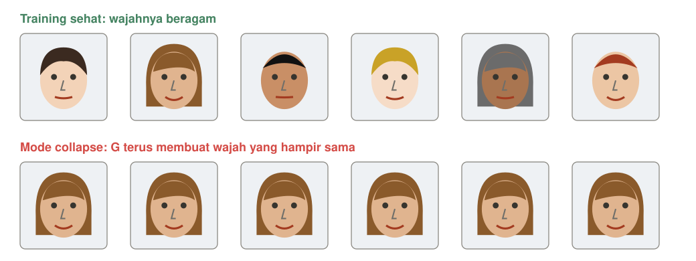
FID dan IS mengukur hasil, bukan memperbaiki training. Keduanya dipakai untuk mengetahui apakah cara yang lain berhasil.
Varian GAN, cukup tahu
- Conditional GAN: label diberikan ke G dan D, supaya kita bisa memilih yang dibuat, misalnya angka 3.
- StyleGAN: arsitektur berbasis style yang bisa menghasilkan wajah sangat realistis.
5. MLP
Single Layer Perceptron vs. Multi Layer Perceptron
Single-layer: belum deep learning
Single-layer adalah model yang input-nya langsung terhubung ke output, tanpa layer di tengah.
Contohnya perceptron, dan cara hitungnya sama dengan linear model: setiap fitur dikali weight, lalu dijumlahkan.
Karena output langsung dihitung dari fitur mentah, batas antar kelasnya hanya bisa garis lurus, dan fitur yang lebih rumit harus dibuat manusia.
Jadi single-layer belum termasuk deep learning.
Masuk deep learning: tambahkan hidden layer
Hidden layer adalah layer di antara input dan output. Layer ini mengubah keadaan karena mengolah input menjadi fitur baru, jadi output tidak lagi melihat fitur mentah.
Activation function di dalamnya membuat tumpukan layer tidak bisa diringkas menjadi satu linear model, sehingga model bisa mempelajari pola non-linear.
Weight-nya dipelajari saat training, jadi fitur baru itu dibentuk sendiri oleh model, bukan dibuat manusia.
Secara ketat, sebutan "deep" biasanya dipakai untuk jaringan dengan banyak hidden layer, tapi slide membahas MLP sebagai dasar deep learning.
3. Kelebihan MLP
- Bisa mempelajari pola non-linear, karena punya hidden layer dan activation function.
- Membentuk fiturnya sendiri, jadi tidak bergantung pada feature engineering manual.
- Fleksibel, karena bisa untuk regresi dan klasifikasi hanya dengan mengganti output layer dan loss.
- Cocok untuk data tabular, yaitu data berbentuk tabel dengan setiap kolom sebagai satu fitur.
- Sangat kuat secara teori, karena satu hidden layer bisa mendekati fungsi kontinu apa pun (Universal Approximation Theorem), walaupun dalam praktik model yang lebih dalam lebih efisien.
4. Namun, MLP punya beberapa limitasi
1. Kurang cocok untuk gambar besar atau rumit karena kehilangan informasi posisi
- Masalah: MLP harus meratakan gambar menjadi satu baris angka (flatten) sebelum diproses.
- Kenapa: setelah di-flatten, piksel yang bertetangga tidak lagi dianggap berdekatan, padahal tepi dan bentuk terbentuk dari piksel yang bertetangga.
- Kenali di soal: datanya berupa foto, misalnya rontgen atau daun.
- Solusi: CNN, karena kernel-nya melihat piksel yang bertetangga secara langsung.
- Contoh jawaban: "MLP masih bisa dipakai untuk gambar kecil dan sederhana. Di PPT, MLP mencapai sekitar 97% pada MNIST, yaitu gambar angka 28 × 28 hitam putih."
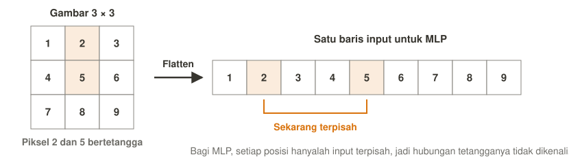
2. Parameter meledak pada input besar
- Masalah: setiap input terhubung ke semua neuron, jadi jumlah parameter cepat membengkak.
- Kenapa: foto 224 × 224 RGB punya 150.528 angka. Ke 1.000 neuron saja butuh (150.528 + 1) × 1.000 = 150.529.000 parameter, sedangkan satu conv 3 × 3 dengan 64 kernel hanya 1.792.
- Kenali di soal: resolusi gambar tinggi, jumlah fitur sangat banyak, atau komputasi terbatas.
- Solusi: CNN dengan weight sharing, atau kurangi dimensi input.
- Contoh jawaban: "Dengan input 150.528 angka, layer pertama MLP saja membutuhkan sekitar 150 juta parameter, karena setiap angka input punya weight sendiri di setiap neuron. Akibatnya, training berat dan mudah overfit. CNN mengatasinya dengan weight sharing. CNN memakai kernel, yaitu kotak kecil berisi weight yang digeser ke seluruh gambar untuk mencari satu pola. Weight yang sama dipakai ulang di semua posisi, jadi jumlahnya tidak ikut naik saat gambar membesar. Hasilnya, satu conv layer 3 × 3 dengan 64 kernel hanya membutuhkan 1.792 parameter."
3. Mudah overfit kalau modelnya terlalu kompleks
4. Condong ke kelas mayoritas pada data tidak seimbang
- Masalah: accuracy terlihat tinggi, tapi kelas minoritas hampir tidak tertangkap.
- Kenapa: loss menghitung semua data sama rata, jadi menebak kelas terbanyak sudah membuat loss kecil.
- Kenali di soal: persentase kelasnya timpang, misalnya gagal bayar 5% atau fraud 1%.
- Solusi: class weight, oversampling atau undersampling, lalu nilai dengan recall dan F1.
- Contoh jawaban: "Nasabah gagal bayar hanya 5%, sehingga model yang selalu menebak lancar sudah mendapat accuracy 95% walaupun tidak menangkap satu pun kasus gagal bayar. Karena itu dipakai class weight yang lebih besar untuk kelas gagal bayar, dan model dinilai dengan recall dan F1."
5. Vanishing gradient kalau terlalu dalam
- Masalah: layer awal hampir tidak belajar.
- Kenapa: chain rule mengalikan banyak angka kecil, terutama kalau memakai sigmoid.
- Kenali di soal: jaringannya banyak layer, memakai sigmoid, dan loss turun sangat lambat.
- Solusi: ReLU dengan He initialization, BatchNorm, atau residual connection.
- Contoh jawaban: "Loss turun sangat lambat karena jaringan 10 layer memakai sigmoid, sehingga gradient mengecil saat dikalikan sampai ke layer awal. Solusinya mengganti activation dengan ReLU dan He initialization, karena turunan ReLU bernilai 1 untuk input positif."
6. Exploding gradient kalau gradient-nya membesar
- Masalah: update weight terlalu jauh, jadi training tidak stabil.
- Kenapa: chain rule mengalikan banyak angka besar, jadi gradient makin besar sampai tidak terkendali.
- Kenali di soal: loss melompat-lompat atau menjadi NaN.
- Solusi: turunkan learning rate, pakai initialization yang sesuai, atau BatchNorm.
- Contoh jawaban: "Loss melompat-lompat lalu menjadi NaN, yang menunjukkan exploding gradient karena gradient membesar saat dikalikan antar layer. Solusinya menurunkan learning rate dan memakai initialization yang sesuai, supaya update weight tidak terlalu jauh."
7. Dying ReLU kalau neuron berhenti aktif
- Masalah: neuron ReLU selalu mengeluarkan 0, jadi berhenti belajar.
- Kenapa: ReLU mengeluarkan 0 untuk input negatif, dan gradient-nya juga 0, jadi weight neuron itu tidak berubah lagi.
- Kenali di soal: memakai ReLU, banyak neuron selalu bernilai 0, dan loss macet.
- Solusi: LeakyReLU atau parametric ReLU, atau kecilkan learning rate.
- Contoh jawaban: "Loss macet dan banyak neuron ReLU selalu bernilai 0, yang menunjukkan dying ReLU. Solusinya mengganti activation dengan LeakyReLU, karena input negatif tetap punya gradient kecil sehingga neuron masih bisa belajar."
8. Underfitting kalau model belum cukup belajar
- Masalah: model belum menangkap pola data, jadi hasilnya buruk di data train dan data baru.
- Kenapa: model terlalu kecil, training terlalu singkat, atau regularization terlalu kuat.
- Kenali di soal: training loss dan validation loss sama-sama tinggi.
- Solusi: perbesar model, latih lebih lama, atau kurangi regularization.
- Contoh jawaban: "Training loss dan validation loss sama-sama tinggi, yang menunjukkan underfitting. Solusinya menambah neuron atau hidden layer dan melatih lebih lama, supaya model punya kemampuan yang cukup untuk menangkap pola data."
9. Learning rate tidak tepat
- Masalah: training tidak stabil atau berjalan sangat lambat.
- Kenapa: learning rate terlalu besar membuat langkahnya melompati titik terbaik, sedangkan learning rate terlalu kecil membuat langkahnya sangat pendek.
- Kenali di soal: loss naik turun dan membesar, atau loss turun sangat lambat.
- Solusi: sesuaikan learning rate, pakai learning rate schedule, atau pakai Adam.
- Contoh jawaban: "Loss naik turun dan makin besar, yang menunjukkan learning rate terlalu besar. Solusinya menurunkan learning rate atau memakai learning rate schedule, supaya langkah update tidak melompati titik terbaik."
10. Tidak mengenal urutan data (tambahan di luar PPT, pelengkap bukan jawaban utama)
- Masalah: MLP melihat input sebagai satu vektor, jadi urutannya tidak punya arti khusus.
- Kenali di soal: data berurutan, misalnya pembacaan sensor per menit.
- Solusi: masukkan jendela data masa lalu sebagai fitur, atau pakai RNN.
- Contoh jawaban: "Kerusakan mesin terlihat dari urutan pembacaan sensor per menit, sedangkan MLP tidak mengenal urutan. Agar tetap bisa dipakai, beberapa pembacaan terakhir dijadikan fitur, tapi model sekuensial seperti RNN lebih tepat."
11. Keputusannya sulit dijelaskan (tambahan di luar PPT, pelengkap bukan jawaban utama)
- Masalah: alasan di balik tebakan sulit ditelusuri.
- Kenapa: keputusannya tersebar di ribuan weight.
- Kenali di soal: bidang yang menuntut alasan, misalnya penolakan kredit atau diagnosis medis.
- Solusi: analisis fitur yang paling berpengaruh, atau pakai model yang lebih mudah dijelaskan.
- Contoh jawaban: "Bank perlu menjelaskan alasan penolakan kredit, sedangkan keputusan MLP tersebar di ribuan weight. Karena itu perlu analisis fitur yang paling berpengaruh."
5. Pola jawaban studi kasus
- Tulis limitasinya, misalnya "class imbalance".
- Ambil bukti dari soal, misalnya "gagal bayar hanya 5%".
- Jelaskan akibatnya, misalnya "model condong menebak lancar".
- Sebut solusinya, misalnya "class weight".
- Beri alasan solusinya bekerja, misalnya "kesalahan pada kelas gagal bayar jadi lebih mahal".
Pilih limitasi yang memang terlihat di soal, bukan semua limitasi di daftar ini. Angka di contoh jawaban hanya ilustrasi.
6. Contoh studi kasus lengkap
Dua kasus ini adalah latihan buatan, bukan soal dari dosen. Soalnya dibuat bercabang seperti yang disebut di kisi-kisi.
Kasus 1: klasifikasi nasabah gagal bayar
Bank punya 10.000 data nasabah dengan 30 kolom, dan hanya 5% nasabah yang gagal bayar. Bank ingin menebak nasabah yang akan gagal bayar.
- Tentukan jenis tugas, arsitektur MLP, activation, loss, dan metric.
- Model mendapat accuracy 95%, tapi recall gagal bayar hanya 10%. Apa masalahnya, dan bagaimana solusinya?
- Setelah epoch 20, training loss terus turun, tapi validation loss naik. Apa masalahnya, dan bagaimana solusinya?
- Bank ingin menambahkan foto dokumen 224 × 224 RGB ke input. Apa limitasi MLP, dan bagaimana solusinya?
Lihat jawaban:
a. Tugas dan arsitektur
- Tugas: klasifikasi 2 kelas, karena jawabannya gagal bayar atau lancar.
- Arsitektur: 30-64-32-1 dengan fully connected, karena datanya tabel dan ada 30 kolom.
- Parameter: (30 + 1) × 64 = 1.984, (64 + 1) × 32 = 2.080, dan (32 + 1) × 1 = 33, jadi totalnya 4.097.
- Activation: hidden layer memakai ReLU supaya gradient tidak mudah menyusut, dan output memakai sigmoid supaya hasilnya satu peluang.
- Loss: binary cross entropy, karena tugasnya klasifikasi 2 kelas.
- Metric: recall dan F1, karena accuracy bisa menyesatkan pada data tidak seimbang.
b. Data tidak seimbang
- Masalah: model condong ke kelas lancar. Menebak semua nasabah lancar saja sudah menghasilkan accuracy 95%.
- Solusi: pakai class weight yang lebih besar untuk kelas gagal bayar, atau oversampling, supaya kesalahan pada kelas itu lebih berpengaruh terhadap loss.
c. Overfitting
- Masalah: model mulai menghafal data train, karena training loss turun tapi validation loss naik.
- Solusi: pakai early stopping supaya training berhenti saat validation loss mulai naik, lalu tambahkan dropout atau L2 supaya model tidak terlalu kompleks.
d. Input gambar
- Masalah: foto harus di-flatten menjadi 224 × 224 × 3 = 150.528 angka, sehingga hubungan antar piksel hilang dan jumlah parameter meledak.
- Solusi: ambil fitur foto dengan CNN karena memakai weight sharing, lalu gabungkan fitur itu dengan data tabel sebelum masuk ke fully connected layer.
Kasus 2: regresi harga rumah
Perusahaan properti ingin memprediksi harga rumah dari 12 fitur. Sebagian kecil rumah mewah harganya jauh lebih mahal daripada rumah lain.
- Tentukan jenis tugas, arsitektur MLP, activation, loss, dan metric.
- Prediksi terlalu terpengaruh oleh rumah mewah. Apa yang perlu diubah?
- Loss melompat-lompat lalu menjadi NaN. Apa masalahnya, dan bagaimana solusinya?
- Pada percobaan lain, training loss dan validation loss sama-sama tinggi. Apa masalahnya, dan bagaimana solusinya?
Lihat jawaban:
a. Tugas dan arsitektur
- Tugas: regresi, karena jawabannya berupa angka kontinu.
- Arsitektur: 12-32-16-1 dengan fully connected, karena ada 12 fitur tabel dan outputnya satu angka.
- Parameter: (12 + 1) × 32 = 416, (32 + 1) × 16 = 528, dan (16 + 1) × 1 = 17, jadi totalnya 961.
- Activation: hidden layer memakai ReLU, dan output tanpa activation supaya nilainya tidak dibatasi.
- Loss dan metric: loss MSE, lalu model dinilai dengan MAE dan R².
b. Outlier
- Masalah: rumah mewah adalah outlier, dan MSE menghukum error besar jauh lebih berat.
- Solusi: ganti loss menjadi MAE, karena lebih tahan terhadap outlier.
c. Exploding gradient atau learning rate terlalu besar
- Masalah: update weight terlalu jauh, sehingga training tidak stabil.
- Solusi: turunkan learning rate, pakai initialization yang sesuai, atau tambahkan BatchNorm.
d. Underfitting
- Masalah: model belum cukup belajar, karena hasilnya buruk di data train dan data validation.
- Solusi: tambah neuron atau hidden layer, atau latih lebih lama.
6. Autoencoder
1. Kenapa butuh autoencoder?
Masalahnya, data sering besar, tapi tidak semua isinya penting. Foto angka 28 × 28 berisi 784 angka, padahal banyak piksel pinggir hampir selalu hitam dan piksel yang bertetangga nilainya mirip.
Data sebesar ini berat diproses, dan kita sering tidak punya label untuk memberi tahu model bagian mana yang penting.
Kita butuh cara untuk meringkas data secara otomatis, tanpa label, dan tetap menyimpan polanya.
Tapi bagaimana cara tahu ringkasannya bagus? Kalau data asli bisa disusun kembali dari ringkasan itu, berarti pola pentingnya masih tersimpan.
Dari ide inilah muncul autoencoder. Autoencoder adalah neural network yang belajar menyusun ulang input-nya sendiri melalui sebuah ringkasan.
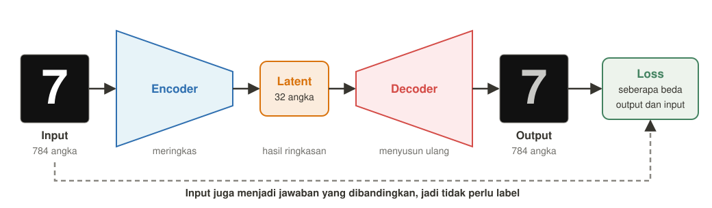
- Encoder: meringkas input menjadi latent.
- Latent: hasil ringkasan data. Ruang tempat ringkasan ini berada disebut latent space.
- Decoder: menyusun ulang input dari latent.
- Loss: mengukur seberapa beda output dengan input. Yang paling umum adalah MSE, dan bisa juga binary cross entropy untuk data biner atau L1.
Kalau hanya mengecil lalu membesar lagi, apa gunanya?
Menyusun ulang input adalah proses saat training, sedangkan kegunaannya baru dipakai setelah training selesai.
Saat training, kita tidak punya label sebagai jawaban yang benar. Karena itu, output dibandingkan dengan input-nya sendiri, supaya model tetap bisa menghitung loss dan belajar.
Setelah encoder dan decoder dilatih bersama, kita memakai bagian yang sesuai dengan tugasnya.
| Yang dipakai | Input | Output | Tugas | Contoh |
|---|---|---|---|---|
| Encoder saja | Data | Latent | Meringkas data | Mengecilkan data, mencari gambar yang mirip |
| Decoder saja | Latent | Data | Membuat data dari latent | Membuat data baru dengan VAE |
| Encoder dan decoder | Data | Data hasil susun ulang | Membersihkan data atau mengecek selisihnya | Membersihkan noise, mendeteksi anomali |
Latent bukan komponen yang dilatih. Latent adalah hasil keluaran encoder, jadi nilainya mengikuti input. Yang punya weight dan dilatih hanya encoder dan decoder.
Decoder yang dipakai sendiri biasanya berguna kalau latent-nya tertata seperti di VAE. Di vanilla, latent acak sering menghasilkan gambar yang tidak jelas.
2. Memilih tipe autoencoder
Tipe dipilih dari tujuan kasusnya, jadi cocokkan tugas di soal dengan penjelasan setiap tipe.
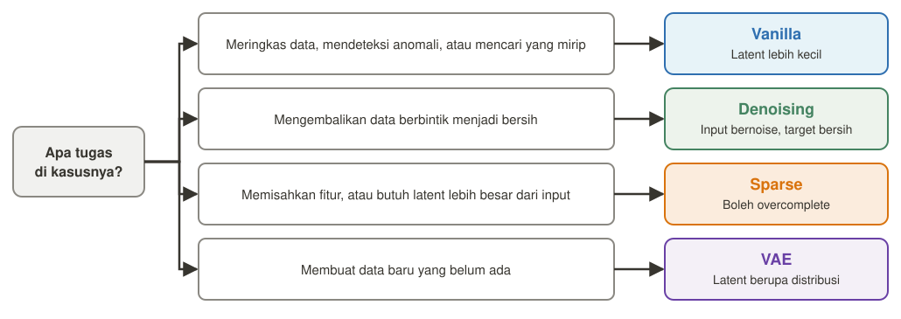
Vanilla: meringkas data
Pilih vanilla kalau kasusnya meminta salah satu tugas ini:
- Mengecilkan ukuran data: data punya banyak fitur atau gambarnya besar, lalu kamu ingin ringkasan yang lebih kecil untuk diproses model berikutnya. Contohnya, data pelanggan dengan 200 kolom diringkas menjadi 20 angka sebelum dipakai model lain.
- Mendeteksi anomali: kamu punya banyak data normal, tapi sangat sedikit data rusak, dan ingin mengenali kondisi yang tidak biasa. Contohnya, mesin pabrik yang jarang rusak.
- Mencari data yang mirip: kamu ingin menemukan gambar atau produk yang mirip dengan membandingkan ringkasannya, tanpa perlu label kelas. Contohnya, toko online mencari produk yang mirip dengan foto yang diunggah pengguna.
Cara kerja: latent yang kecil memaksa model hanya menyimpan pola penting.
Latent: harus lebih kecil dari input, supaya model tidak hanya menyalin input.
Untuk anomali, model dilatih dengan data normal. Data yang tidak biasa sulit disusun ulang, sehingga loss-nya tinggi.
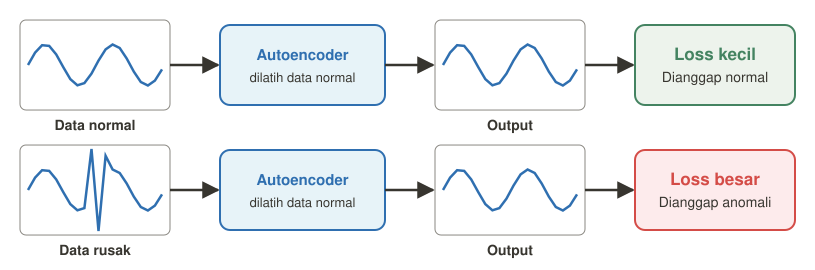
Denoising: membersihkan data
Pilih denoising kalau kasusnya meminta salah satu tugas ini:
- Mengembalikan data rusak menjadi bersih: data yang masuk berbintik atau terganggu, dan kamu ingin hasil yang lebih bersih. Contohnya, foto hasil scan yang berbintik atau sinyal sensor yang terganggu.
- Mengambil fitur yang tahan gangguan: data saat dipakai nanti tidak selalu sempurna, tapi model harus tetap menangkap pola pentingnya. Contohnya, kamera pabrik kadang menghasilkan gambar berbintik, tapi bentuk barang tetap harus dikenali.
Cara kerja: input diberi noise, tapi jawaban yang dibandingkan tetap data bersih.
Latent: biasanya lebih kecil dari input.
Saat training, kamu perlu punya data bersih, karena noise ditambahkan ke data itu dan targetnya tetap versi bersihnya.
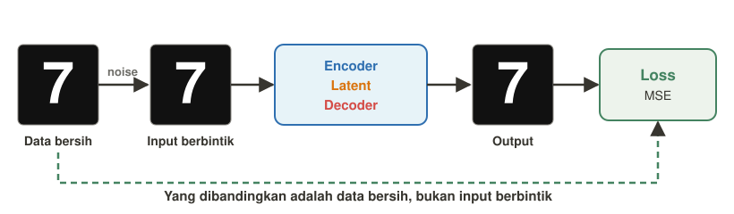
Sparse: menemukan fitur yang mudah dijelaskan
Pilih sparse kalau kasusnya meminta salah satu tugas ini:
- Mengetahui pola penyusun data: kamu ingin setiap neuron mewakili pola yang berbeda, supaya hasilnya lebih mudah dijelaskan. Contohnya, mencari bagian-bagian yang menyusun gambar angka.
- Menyediakan banyak fitur: kasus membutuhkan banyak pola, sampai latent perlu lebih besar dari input. Contohnya, foto wajah punya banyak pola kecil, seperti bentuk mata, alis, dan hidung, yang ingin dipisahkan ke neuron yang berbeda.
Cara kerja: loss ditambah penalti, sehingga hanya sedikit neuron latent yang aktif untuk setiap input.
Latent: boleh lebih besar dari input, karena penalti mencegah model hanya menyalin input.
Gambar ini hanya ilustrasi, karena pola yang dipelajari neuron tidak selalu serapi ini.
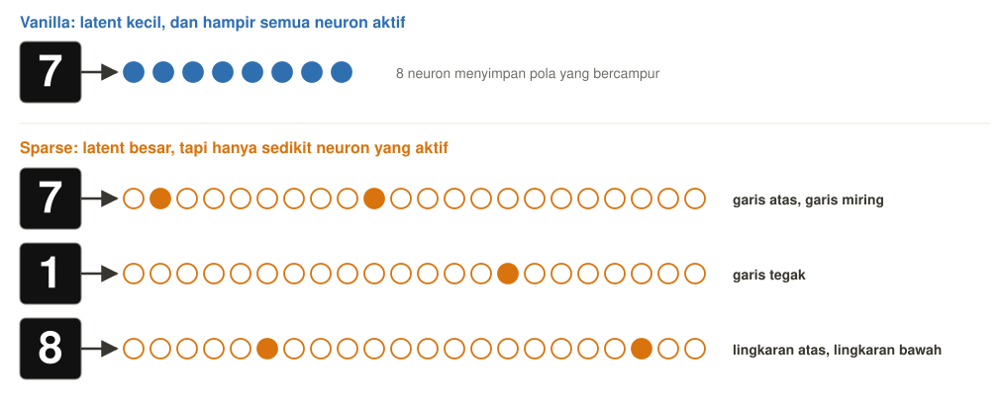
VAE: membuat data baru
Masalah di vanilla: setiap foto menjadi satu titik di latent, dan ruang di antara titik-titik itu tidak terlatih. Kalau kita mengambil latent acak, decoder bisa menghasilkan gambar yang tidak jelas.
VAE menata latent supaya titik yang diambil dari area itu lebih mungkin menjadi data yang masuk akal.
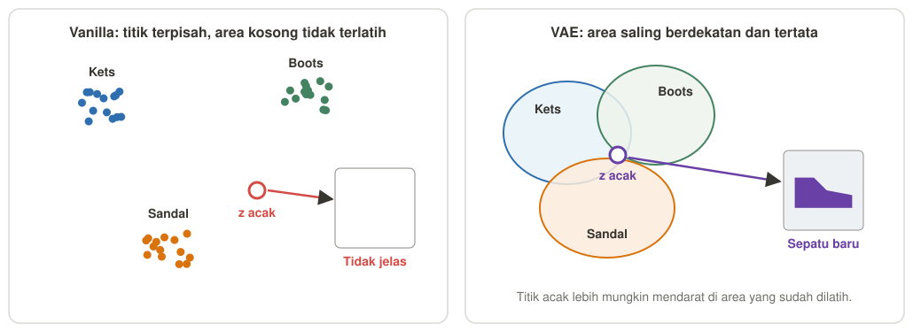
Pilih VAE kalau kasusnya meminta salah satu tugas ini:
- Membuat data baru yang mirip dataset: toko sepatu punya 10.000 foto katalog dan ingin membuat desain sepatu baru yang belum ada, bukan mencari atau membersihkan foto yang sudah ada.
- Menambah data latih: jumlah foto sepatu masih kurang untuk melatih model lain, sehingga VAE dilatih dengan foto yang ada, lalu membuat foto sepatu tambahan yang mirip.
- Membuat transisi halus antar data: aplikasi desain ingin menampilkan perubahan bertahap dari sepatu kets ke sepatu boots, dengan mengambil beberapa titik di antara latent keduanya.
Cara kerja saat training:
- Foto sepatu masuk ke encoder.
- Encoder menghasilkan μ, yaitu pusat area, dan σ, yaitu lebar area, bukan satu titik.
- Model mengambil satu titik z secara acak dari area itu: z = μ + σ × ε, dengan ε sebagai angka acak. Contohnya, kalau μ = 2, σ = 0,5, dan ε = −0,4, maka z = 1,8.
- Decoder menyusun ulang foto sepatu dari z.
- Loss dihitung dari reconstruction + KL divergence.
Fungsi dua loss:
- Reconstruction: memaksa hasil susun ulang mirip foto asli.
- KL divergence: memaksa semua area latent berkumpul mendekati distribusi normal, supaya ruang latent tidak berlubang.
Cara memakai setelah training: ambil z acak dari distribusi normal, lalu masukkan ke decoder untuk mendapatkan desain baru. Encoder tidak diperlukan untuk tugas ini.
Latent: biasanya lebih kecil dari input, dan berupa distribusi, bukan satu titik.
Bayangkan vanilla seperti menyimpan alamat rumah yang tepat, sedangkan VAE menyimpan satu lingkungan. Bedanya, lingkungan di VAE dipelajari sendiri dan ditata supaya saling berdekatan.
VAE biasa tidak otomatis bisa diminta membuat kelas tertentu. Untuk itu, model dilatih khusus pada kelas tersebut atau diberi label kelas.
Contoh sepatu adalah contoh tambahan, bukan dari PPT.
Dibandingkan PCA yang linear, autoencoder bisa mempelajari pola non-linear, dan keduanya tidak butuh label.
3. Menentukan bentuk arsitektur
Setiap bagian arsitektur harus punya alasan. Kerjakan enam keputusan ini berurutan, karena setiap keputusan menjadi bagian dari justifikasi.
- Ukuran input dan output
- Jenis layer
- Ukuran latent
- Simetris atau tidak
- Activation
- Loss
Perbandingan bentuk latent dan simetri:
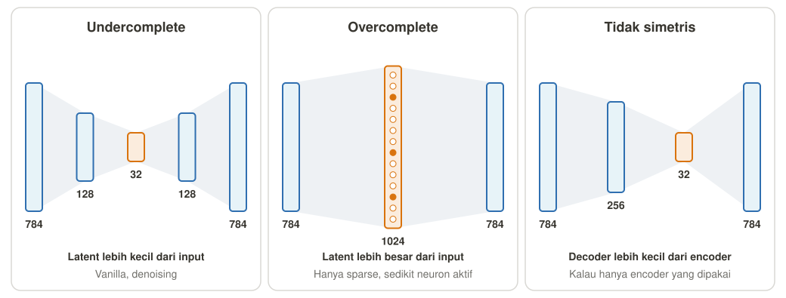
Kenapa overcomplete tidak boleh di vanilla?
Overcomplete adalah bentuk dengan latent lebih besar dari input.
- Di vanilla: tidak ada yang memaksa model meringkas, jadi model bisa hanya menyalin input ke output. Loss-nya kecil, tapi tidak ada pola yang dipelajari.
- Di sparse: penalti membuat hanya sedikit neuron yang aktif, jadi model tetap harus memilih pola yang penting walaupun latent-nya besar.
Rumus loss sparse: reconstruction loss + λ|z|, dengan λ sebagai pengatur kekuatan penalti dan z sebagai nilai latent. Selain L1, PPT juga menyebut KL divergence sebagai penalti.
Kesalahan umum saat merancang autoencoder
| Kesalahan | Akibat | Perbaikan |
|---|---|---|
| Latent terlalu besar di vanilla | Model hanya menyalin input | Perkecil latent, atau pakai sparse kalau memang butuh latent besar |
| Data selalu masuk tanpa noise | Model bisa overfit pada data train | Pakai denoising kalau model harus tahan gangguan |
| Input tidak dinormalkan | Rentang output sulit disamakan dengan input | Normalkan input ke 0 sampai 1 |
| Lupa sigmoid pada output piksel | Nilai output bisa keluar dari rentang 0 sampai 1 | Pakai sigmoid di layer output |
| Tidak memantau data validation | Overfitting tidak terlihat | Pantau reconstruction loss di data validation |
4. Template jawaban studi kasus
- Tipe: "Dipilih [tipe] karena kasus ini membutuhkan [tujuan]."
- Bentuk: "Arsitekturnya [ukuran layer], memakai [fully connected atau Conv] karena datanya [jenis data]."
- Latent: "Ukuran latent [angka], lebih [kecil atau besar] dari input, karena [alasan]."
- Simetri: "Bentuknya [simetris atau tidak simetris] karena [alasan]."
- Activation dan loss: "Hidden layer memakai [activation] karena [alasan], output memakai [activation] karena [rentang data], dan loss-nya [nama loss] karena [jenis data]."
5. Contoh kasus
Angka arsitektur dan pasangan kasus dengan tipe adalah contoh dan rekomendasi, bukan dari PPT. Saat ujian, yang dinilai adalah kesesuaian alasannya dengan kasus.
Kasus 1: deteksi anomali sensor industri
Pabrik punya 20 sensor dan banyak data kondisi normal, tapi sangat sedikit data kerusakan.
Lihat jawaban:
- Tipe: vanilla, karena model bisa dilatih dengan data normal, lalu data yang loss-nya tinggi dianggap anomali.
- Bentuk: 20-12-6-12-20, memakai fully connected karena datanya berupa tabel angka sensor.
- Latent: 6, lebih kecil dari input, supaya model hanya menyimpan pola kondisi normal dan tidak menyalin input.
- Simetri: simetris, karena encoder dan decoder sama-sama perlu kuat untuk menyusun ulang data dengan baik.
- Activation dan loss: hidden layer memakai ReLU supaya gradient tidak mudah menyusut. Output memakai sigmoid karena input dinormalkan ke 0 sampai 1, dan loss-nya MSE karena nilainya kontinu.
Kasus 2: membersihkan foto berbintik
Foto hitam putih 64 × 64 banyak mengandung bintik, dan kita ingin mendapatkan versi bersihnya.
Lihat jawaban:
- Tipe: denoising, karena input yang diberi noise dilatih untuk kembali ke gambar bersih.
- Bentuk: 1 × 64 × 64, 16 × 32 × 32, 8 × 16 × 16, 16 × 32 × 32, lalu 1 × 64 × 64. Bentuk ini memakai Conv dan ConvTranspose karena datanya gambar dan hubungan antar piksel harus dijaga.
- Latent: 8 × 16 × 16 = 2.048 angka, lebih kecil dari input 4.096 angka, supaya noise tidak ikut tersimpan.
- Simetri: simetris, karena decoder harus mengembalikan ukuran gambar secara bertahap.
- Activation dan loss: Conv dan ConvTranspose di tengah memakai ReLU supaya gradient tidak mudah menyusut. Output memakai sigmoid karena piksel bernilai 0 sampai 1, dan loss-nya MSE terhadap gambar bersih, bukan gambar berbintik.
Kasus 3: mencari fitur yang mudah dijelaskan
Peneliti ingin mengetahui fitur-fitur yang menyusun gambar angka 28 × 28, dan setiap neuron diharapkan mewakili fitur yang berbeda.
Lihat jawaban:
- Tipe: sparse, karena hanya sedikit neuron aktif, sehingga fiturnya lebih mudah dipisahkan dan dijelaskan.
- Bentuk: 784-1024-784, memakai fully connected karena gambar di-flatten seperti contoh MNIST di PPT.
- Latent: 1.024, lebih besar dari input (overcomplete), supaya tersedia banyak neuron untuk banyak fitur. Bentuk ini aman karena penalti sparse mencegah model hanya menyalin input.
- Simetri: simetris, karena tidak ada kebutuhan khusus untuk membuat salah satu sisi lebih kecil.
- Activation dan loss: hidden layer memakai ReLU, sehingga banyak neuron bisa bernilai 0. Output memakai sigmoid karena piksel bernilai 0 sampai 1, dan loss-nya MSE + λ|z| karena neuron yang aktif perlu dibatasi.
Kasus 4: membuat gambar baru
Kita ingin membuat gambar angka 28 × 28 baru yang tidak ada di dataset.
Lihat jawaban:
- Tipe: VAE, karena latent-nya kontinu dan bisa diambil sampelnya untuk membuat data baru.
- Bentuk: 784-256, lalu μ dan σ berukuran 32, kemudian z-256-784. Bentuk ini memakai fully connected karena gambar di-flatten.
- Latent: 32, lebih kecil dari input, supaya model mempelajari pola umum angka.
- Simetri: simetris, karena decoder harus cukup kuat untuk membuat gambar dari sampel z.
- Activation dan loss: hidden layer memakai ReLU. Output memakai sigmoid karena piksel bernilai 0 sampai 1, dan loss-nya reconstruction + KL divergence. KL memaksa distribusi latent mendekati normal, supaya sampelnya menghasilkan gambar yang masuk akal.
Kasus 5: mencari gambar yang mirip
Toko online ingin mencari gambar yang mirip dengan gambar 28 × 28 yang diunggah pengguna.
Lihat jawaban:
- Tipe: vanilla, karena tujuannya mendapatkan ringkasan data, lalu membandingkan kemiripan latent-nya.
- Bentuk: 784-256-32-784, memakai fully connected karena gambar di-flatten.
- Latent: 32, lebih kecil dari input, supaya gambar yang mirip punya ringkasan yang berdekatan dan pencariannya lebih ringan.
- Simetri: tidak simetris, karena setelah training hanya encoder yang dipakai untuk pencarian, jadi decoder dibuat lebih kecil supaya training lebih ringan.
- Activation dan loss: hidden layer memakai ReLU supaya gradient tidak mudah menyusut. Output memakai sigmoid karena piksel bernilai 0 sampai 1, dan loss-nya MSE karena nilainya kontinu.